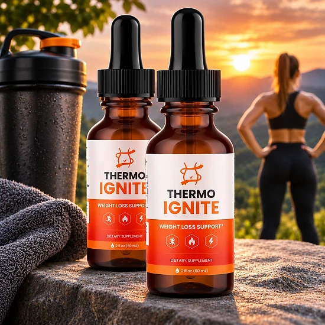
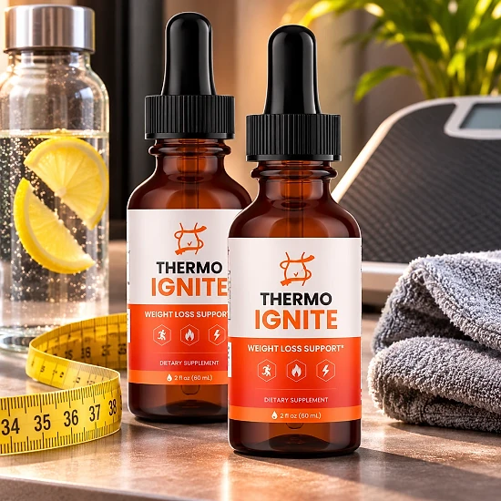
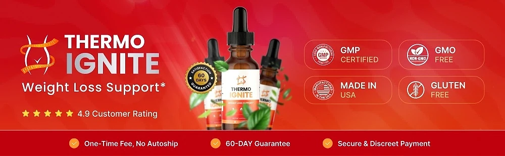

What Is Thermo Ignite And How Does It Work?
Thermo Ignite is a liquid dietary supplement in drop form designed to support healthy weight management, appetite control, and natural daily energy for adults who feel that a slower metabolism, sugar cravings, and low energy are making it harder to reach their goals — through a simple routine, without complicated plans or harsh stimulants.
It utilizes a blend of plant extracts, an amino acid, and a mineral that combines Chromium Picolinate, L-Carnitine, Green Tea Extract, Gymnema Sylvestre, and African Mango Seed to support fat metabolism, thermogenesis, and balanced blood sugar, helping the body use its energy more efficiently throughout the day.
According to the official website, the main difference is the format. Unlike pills that take time to break down, Thermo Ignite comes as fast-absorbing liquid drops, which the brand says allows for faster absorption and easier digestion.
Rather than relying on short-term stimulation, Thermo Ignite was formulated, according to the brand, to provide balanced, sustainable support. Its ingredients are selected to work on the factors that influence weight, from cravings and blood sugar to the way the body uses fat for energy.
With consistent daily use, the official website reports that some users notice changes in appetite control and energy levels within the first few weeks, and it recommends at least 30 to 90 days of use alongside a balanced diet and regular physical activity. Individual results may vary.
From a practical standpoint, each Thermo Ignite bottle holds 2 fl oz (60 mL) of liquid, taken as 1 mL twice a day, so one bottle lasts about a month. The drops can be taken at any time of day that fits your routine.
The brand describes Thermo Ignite as non-GMO and made in the USA, distributed from its facility in Aurora, Colorado. It is a dietary supplement, not intended to diagnose, treat, cure, or prevent any disease, and it is meant to complement a healthy lifestyle, not replace it.
Thermo Ignite Ingredients
Every serving of Thermo Ignite combines five plant extracts, amino acids, and minerals, chosen to support metabolism, appetite control, and daily energy as part of a consistent routine:
Chromium Picolinate: An essential mineral that helps regulate blood sugar levels and reduce sugar cravings, especially as metabolism slows with age.
L-Carnitine HCl: An amino acid that helps transport fatty acids into cells to be used as energy, supporting fat burning and daily energy.
Green Tea Extract: Rich in antioxidants and catechins, it supports thermogenesis, helping the body burn calories more efficiently.
Gymnema Sylvestre Extract: A plant traditionally used to help reduce sugar cravings and support healthy appetite control.
African Mango Seed Extract: Traditionally used to support fat metabolism and healthy cholesterol levels.
Together, these ingredients are designed to support blood sugar balance, fat metabolism, and appetite control without unnecessary fillers. The official website names each ingredient, but it does not publish the amount of each one per serving.
Thermo Ignite is designed for daily use, offering a simple, non-prescription approach to weight management in an easy liquid format.
Thermo Ignite Side Effects
According to the official website, Thermo Ignite is made with carefully selected ingredients that are commonly used in dietary supplements, and most users tolerate it very well. It is designed for adults who want a balanced approach to weight management rather than an aggressive, short-term stimulant.
The formula is built on plant extracts, an amino acid, and a mineral, and the brand describes it as non-GMO and made in the USA. Green tea extract naturally contains catechins and caffeine-like compounds, which is worth keeping in mind for anyone who reacts strongly to coffee or tea.
With no widespread reports of serious side effects, Thermo Ignite is generally considered a well-tolerated option. Still, the official FAQ recommends that people who are sensitive to caffeine-like ingredients or herbal extracts start with a smaller dose and talk to a healthcare provider if they have any concerns. Do not exceed the recommended dosage.
The official website strongly recommends consulting a healthcare provider before use if you take prescription medications or have a medical condition. This matters especially for people managing their blood sugar, since chromium and gymnema are linked to blood sugar balance. The same caution applies to anyone who is pregnant or nursing.
Thermo Ignite Dosage
Thermo Ignite is meant to be taken every day, and it is designed to fit easily into a daily routine, making consistency simple and convenient. It comes as liquid drops with a dropper, so there are no pills to swallow and nothing complicated to prepare.
The recommended approach, according to the official website, is to take 1 mL (about two full droppers) twice daily, or as directed by your healthcare professional. The drops can be taken at any time of day that fits your routine. Each 2 fl oz (60 mL) bottle covers about a month of use.
For best results, consistency is key. The official website explains that some users notice changes in appetite control and energy within the first few weeks, and it recommends consistent use for at least 30 to 90 days. Individual results may vary depending on diet, activity level, and metabolism.
There is no need for complex schedules. Two simple servings a day are designed to build support gradually, alongside a balanced diet and regular physical activity, which the brand recommends for best results.
As with any wellness product, it's important not to exceed the recommended dosage. Store the bottle in a cool, dry place; the brand recommends using it within 24 months of the manufacturing date marked on each bottle. Thermo Ignite works best when used regularly, combined with healthy daily habits.
Thermo Ignite – Refund Policy
You can order Thermo Ignite with confidence, knowing that every purchase is protected by a 60-day satisfaction promise, counted from the original purchase date. This gives you time to use the drops consistently and decide if they deliver the support you expect.
According to the official refund policy, customers who are not fully satisfied should contact customer support within 60 days of purchase. All bottles must be sent back, whether they are empty or unopened, together with any bonuses or gifts included in the order, and the return shipping is paid by the customer unless the wrong or a damaged item was sent.
How the refund process works: Contact support through the contact page with the subject line “Refund Request” and your order number. The team reviews the request and sends return instructions; the package must then be shipped within 7 calendar days with a trackable method, the packing slip inside, and the tracking ID sent to support. The policy also mentions an optional partial refund in some cases, with no return required.
Customer Support Contact Information: support is handled through the contact page on the official website, and the return address is a fulfillment center in Aurora, Colorado, USA.
Refund Processing Time: Inspection and approval usually take 3 to 5 business days after the return arrives, and the refund then reaches the original payment method in 5 to 7 business days for credit cards or 5 to 10 for debit cards.
This refund policy is designed to give customers a clear and transparent experience when trying Thermo Ignite.
Thermo Ignite – Where To Buy
Thermo Ignite is sold through its official website, so if you decide to try it, it's important to be careful about where you purchase it. The official website is the only sales channel the manufacturer lists, and it does not point to marketplaces such as Amazon, eBay, or Walmart.
Listings on third-party platforms may look similar but cannot be verified as authentic, raising concerns about safety, quality, and ingredient freshness. Products purchased outside the official source may not be covered by the 60-day satisfaction promise.
For this reason, most customers recommend purchasing Thermo Ignite only through the official website. Buying directly from the official source ensures you receive the authentic original product, with access to customer support and the full guarantee. According to the official website, every order is a one-time purchase, with no autoship and no hidden subscriptions.
To avoid counterfeit batches and ensure maximum quality, always verify that you are ordering from the official Thermo Ignite website before completing your purchase.
To ensure you’re getting the authentic product, most users choose to visit the official website.
Is Thermo Ignite A Scam?
Based on what the official website discloses, Thermo Ignite does not appear to be a scam. It is a real product, sold through an established retailer, and formulated to support healthy weight management, appetite control, and natural energy as part of a consistent daily routine.
The ingredients used in Thermo Ignite — Chromium Picolinate, L-Carnitine, Green Tea Extract, Gymnema Sylvestre, and African Mango Seed — are well known in the weight management field and are named on the official website for transparency, although the amount of each one per serving is not published.
In addition to its simple formula, Thermo Ignite is described by the brand as non-GMO and made in the USA, and the company lists a fulfillment address in Aurora, Colorado, and a customer support contact page.
The official website shows before-and-after photos from people who used Thermo Ignite, and it stresses that every body responds differently. No supplement can promise a specific amount of weight loss, which is why realistic expectations, a balanced diet, regular activity, and consistent use matter.
Thermo Ignite is backed by a 60-day satisfaction promise, and orders are one-time purchases with no autoship, recurring charges, or hidden subscriptions. This policy underscores the manufacturer's commitment to customer satisfaction and product integrity.
If you're looking for a simple daily liquid supplement to support metabolism, appetite control, and energy without aggressive stimulants, Thermo Ignite is worth considering — especially when purchased directly from the official website.
For those who want to verify product details or check current availability, the official Thermo Ignite website remains the safest option.

Check Availability On Official Website
